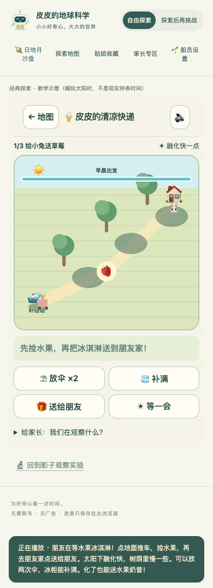
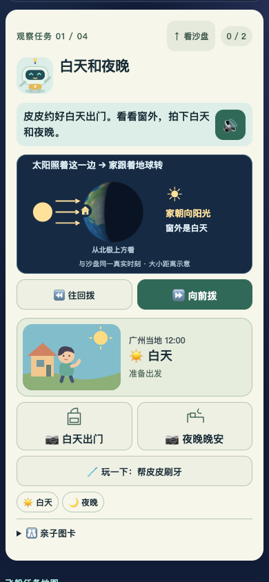
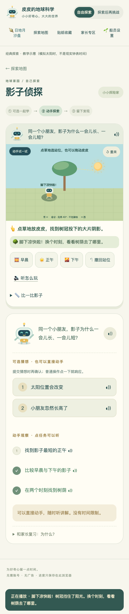

皮皮的清凉快递：把冰淇淋送到朋友家
用户认为上一版仍然无聊。本次先把影子关变成一个有目标的小故事：推车捡水果，再给朋友送点心。故事冒险作为主入口，原观察实验仍可进入，其余关卡没有同时翻新。
本次验证：46 项单元测试、本地及线上资源各 36 项浏览器测试通过；254 个公网资源哈希一致。线上交互使用校验证书和哈希的本地传输，非实体手机验收。请 Pro 实际试玩新增玩法，判断趣味性和孩子能否自主选择。若仅查看本页，请明确未实际试玩。下方旧四项说明作为上一基线保留，无需从头重复评审。
这次冒险怎么玩
- 三张地图：给小兔送草莓、小熊的午后野餐、小猫的花园。起点、配料、朋友家和出发时刻不同。点地面推车，先捡水果，再去送达。
- 自己选路线和放伞：树荫随教学太阳时移动，每局两次放置或移动遮阳伞的机会，放置模式可取消。要找伞投到地面的影子，而不只是站在伞杆旁。
- 树荫只减慢融化：太阳下融化快，树荫中慢一些；树荫不会重新冻住冰淇淋。起点冰柜随时可补满。
- 两种成果都接受：凉爽的水果冰淇淋，或融化后分享的水果奶昔。融化不会导致死局，也不要求硬赢。
- 停下思考时暂停：只有行走或主动“等一会”才推进时间和融化；减少动态模式仍按沿路阴影计算。
- 送到以后自由玩：继续探索、同地图再送一次，或换下一张地图。暂不把故事送达认定为科学理解贴纸。
- 21 条本地配音：短故事提示与随时点读；自主阅读模式也可主动听提示。资源可用不等于真实扬声器听感已验收。

科学边界：春秋分、北纬 40°、平地条件，树冠和伞简化为水平遮光面；时间和融化速度为游戏加速示意，不是实际食品保存模型。
请 Pro 实玩后重点回答
- 不先读说明，能否理解“捡水果—送朋友”，知道如何走、何时送？
- 路线、树荫和两次放伞是否有真正的选择，还是仍然随便点就结束？请给出具体地图和操作。
- 奶昔结果是否鼓励探索，又能保留树荫减慢融化的可观察差别？送达不能代替理解。
- 通关后是否愿意再送一次或换地图？哪些地方像冒险，哪些仍像教材操作？
- 390 像素宽时图标、阴影、按钮和反馈是否清楚好点，语音是否打断探索？
真实孩子试玩、真实扬声器听感尚未验收。自动化只能验证状态与操作链，不能证明孩子觉得有趣。请区分可复现缺陷、评审判断与需要儿童实测的假设。
上一基线：四项改进与跨页档案保护
上一基线：让孩子自己选择，看见科学原因
本轮只落实 Pro 上轮建议中的四项：统一儿童档案、手机因果同屏、影子关自主站位、减少普通操作确认。请以 20261106-engagement-0b72a80ccd9d 为基线复核新增差异，不必重做项目背景评审。
本页是无需 JavaScript 的静态材料。截图是实际浏览器画面；交互需要打开游戏，或下载当前 main 副本并通过本地 HTTP 服务运行。若仅阅读材料，请明确未实际试玩。RELEASE.json 用于核对发布版本及 233 个游戏资源的校验值。
这次改了什么
| 上轮问题 | 本轮改变 | 复核重点 |
|---|---|---|
| 手机原因与结果分成两屏 | 任务旁增加读取同一模拟快照的简化科学小窗，与生活结果和操作一起呈现。 | 拨时间时，能否同时看见什么动了、哪里变暗了？ |
| 沙盘与八关使用两套身份 | 共用两位船员、阅读与声音偏好、探索方式和各自进度；经典页可返回沙盘。 | 新→经典→新身份一致，阅读支持与挑战独立，孩子间不串记录。 |
| 按钮替孩子走进树荫 | 孩子点击地面、拖动皮皮或用方向键选择站位；时间变化时人物不自动跟随阴影。 | 误放不成功；上午找到后，下午必须自己重新寻找。 |
| 普通动作反复确认 | 换装和试放拼图直接响应，可以再选、清除或撤回；名称另可点读；猜想保留确认。 | 动作是否直接，取消猜想是否没有提交，未识字孩子能否自主试。 |
首次导学可跳过，回访直接玩，讲解随时重播。阅读支持与科学挑战分开；会识字不等于必须玩更难。
手机里的科学关系
- 昼夜：太阳照射方向、地球、同一个家标记，与窗外昼夜对应。
- 月相：月亮位置、照亮的一面，以及同一时刻从地球看到的月盘。
- 白天找月亮：太阳、月亮在地平线上方或下方的位置；角度数值在详情层。
- 月球兔子：同一个月面标记、运动方向及固定空间方向参照。
小窗是同一状态的示意投影，不是第二套计时器，也不按真实距离比例绘制。本批没有新增两次记录间的连续回放。


档案迁移和跨页安全
经典进度现在按船员保存。无法判断属于谁的 little/big 旧记录只展示为“未分配的旧记录”，不归给任何孩子。原 pipi-earth-v1 不改写并另存首次备份；沙盘升级前原值保存到 pipi-universe-v1-backup-before-profiles-v2，首次备份不覆盖。
每次修改先读取最新存档并合并本次变更，防止旧页覆盖另一页刚保存的记录。另一页切换身份或修改档案时，当前页停止声音与动画并重载，清空临时任务，阻止旧界面把动作写给新孩子。已保存记录保留；未保存的本轮操作会重置。浏览器返回缓存恢复时也检查档案。
建议同一站点打开沙盘与经典两个标签页，切换船员，分别留下记录，确认另一页同步且两份记录保留，再切换孩子检查隔离。公开站和个人服务器是不同来源，各自保存浏览器存档，不提供云端同步。
影子玩法如何判断
阳光下反馈“这里还有点晒”，进入树荫反馈“脚下凉快啦”，程序不替孩子纠正。改时间后阴影移动，皮皮留在原地。不同时间自主找到树荫才产生不同观察，撤回不增加次数。
这是固定纬度、春秋分、平地条件的教学模型；简化树冠投影不是任意真实树木的精确阴影。测量杆与树冠高度不同，长度记录和站位任务对应不同对象。经典“教学示意”与沙盘日期时间分别标明，未将八关重写成精密天文模型。
测试通过不等于孩子已经会玩
本地自动化：42 项单元测试 + 32 项端到端测试通过，零跳过。覆盖迁移、两人隔离、真实双页 UI 同步和记录保留、普通操作撤销、回访、影子点击/拖动/键盘及手机视口。
线上资源验证：233 个文件（7,332,193 字节）通过公网证书校验与逐文件 SHA-256 比对。实际线上资源由本地 4175 端口承接后，完整 32 项端到端测试全过，零跳过、零 flaky；服务器配置和容器状态未变。这覆盖发布资源与交互，不是直接 IP 网站的真机验收。返回缓存恢复事件的覆盖不等于所有浏览器的真实 BFCache 命中；390 像素视口不等于真实手机触摸验收。
真实孩子试玩、真实扬声器听感及长期学习效果尚未验收。请分别记录家长在哪里必须代读/代点、换起始条件后孩子能否再做、拿到贴纸后是否还愿意自己试。通关和贴纸不能代替理解。
请 Pro 聚焦五个问题
- 小窗是否真正把原因与结果连起来，而不是增加了一张孩子忽略的图？
- 档案与跨页规则是否一致，有无记录丢失或错误归属路径？
- 影子关是否由孩子自己判断，误放与再次寻找是否有趣，触控目标是否好操作？
- 普通动作是否直接，点读和猜想确认是否仍有不必要门槛？
- 请区分可复现缺陷、儿童试玩假设、发布阻断及后续建议。
本批保留四个日地月任务和经典八关。月亮连续回放、地心层片重做、火山标记追踪不在本批范围。地心只调整普通拼图确认和撤销，不宣称已有新的立体层片玩法。先判断四项是否解决上轮重点，再决定后续工作。